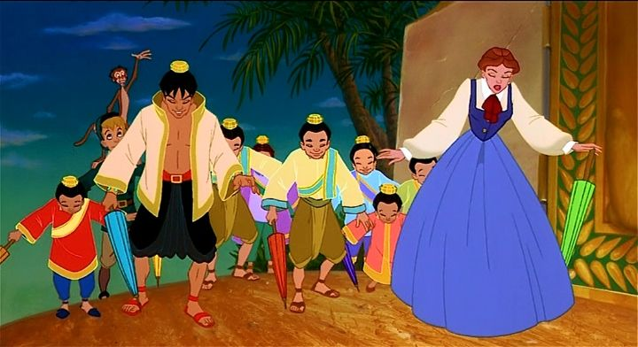

By 2021, against all odds, most of my childhood films have been re-released on 1080p Bluray. "The King and I" (the Warner Bros. animated adaptation from 1999) was one of the last films I expected to receive a Bluray, especially for modern, more culturally-senstive viewers. Now, all I'm missing is "Cats Don't Dance," "Quest for Camelot," and "Osmosis Jones" (all also Warner Bros. films, and since "King"'s disc didn't actually come from WB, I'm not holding my breath). This is indeed a film adaptation of the classic broadway musical written by Rogers and Hammerstein, most famously adapted in a live-action film in 1956. Of course, the movie is only 90-minutes long, cutting out some songs and scenes. Of course, the movie was made for children, specifically young children, so some creative liberties were used: there are more cute animals, and a villain with a bumbling sidekick for comic-relief. I have no doubt fans of the musical will be apalled, as many critics were. But I was a young child when I first watched it, and it was my first introduction to the musical. And in many ways, I enjoyed it well enough. Rewatching it today as an adult, I still enjoy it. That's largely due to the strengths of the original musical, its songs and its story. Taking place in Siam (now Thailand) in the 1800s, and loosely inspired by real individuals, it tells the story of Anna, an English schoolteacher, brought to the foriegn country on order of King Mongkut. The King wants to bring "the best of Western culture" to his people, specifically to his many royal children: Anna will teach them, while the King pursues other advancements, including a hot-air balloon for flight. But the culture is different: this is a country where servants are offered as gifts, where reading and education is not a public right, and all must bow before the King, their heads lower than his at all times. It's a culture shock for Anna, and her refusal to compromise on some of her arrangements is a culture shock to the King. Everyone learns something.And in this movie, the scheming Prime Minister, a cross between Disney's Jafar and Scar, uses magic to create evil illusions and plots to have British forces deem the King as a barbarian, dethroning him and taking his place at their request. His henchman, "Master Little," is a rolly-polly fellow that looks like Buddha with Mickey Rooney's bad Chinese accent (the Buddha thing is explicitly used as a joke), with the odd quirk of being very proud of his white teeth, which get knocked out one by one as the movie progresses. I didn't mind this addition, and as a child was probably pleased with extra story elements (one of the reasons why "Cats" should never be a movie), but I agree that this was largely unnecessary. It's one of several ways the movie talks down to children to get their attention. Is the movie offensive? Well... yes, the henchman Master Little is a little bit, but I enjoyed the movie's childish sense of humor, mostly at his expense. The frequent references to the King being a "barbarian," largely because that's the driving force of the movie's antagonist, should also give pause, even if the word would have been commonly used at the time period the musical is set. Not to mention referring to how Britain might dethrone the King and choose a more appropriate successor for the foreign country, a real thing that was done centuries ago, even if the idea might have been an innocent plot point in the 1990s. But even the original musical could be problematic from a cultural perspective; I was surprised to learn the musical and all film adaptations of it have always been banned in Thailand. The intended audience isn't really meant to be those looking for acknowledgement and pride from that part of the world, but rather was meant for Western audiences willing to learn about exotic cultures they know nothing about (fictional liberties aside), the original intent of the musical.  For all audiences, the movie really shines when it focuses on Ann and the King, and perhaps the King's children, rather than Anna's adventuring son and his pet monkey, or the other comic relief or cute animals. The themes are still relevant, and the more classic songs, including "I Whistle a Happy Tune" and "Getting to Know You," are present and beautifully sung (and general enough for 1st graders to learn in Music class). In fact, the music and acting are all nice, in a nostalgic sort of way. It reminds me a lot of animated movies and musicals from that era. The only issue there is that most of the voices sound American, when most of the cast is supporsed to be Asian (but this was probably true of the stage version too). The production values are where things fall a bit. Compared to other animated films from Warner Bros, director Richard Rich, or Rankin/Bass (all involved in some way), this really feels like it was outsourced to a cheaper animation studio, while attempting to match the quality seen in Disney or Don Bluth movies. The are minor coloring and animation mistakes, inconsistent animation quality, odd timing on cuts, etcetera, etcetera. The early-use of CGI wasn't too bad in here, surprisingly. I liked the character designs though, and some characters seemed to get more attention towards their quality (the King and the Prime Minister, mainly). There are a few inspired moments of choreography that highlight why animation could be a great venue for this musical, but these are often quickly interrupted by some wacky animal or person. Yes, "The King and I" has recently become available on Bluray, in addition to the older DVD and VHS releases. The American disc is barebones, with a main menu that only offers to play the movie, and whether to turn off English subtitles. The picture quality is relatively sharp, but there are other issues: some scenes have significant ghosting, over-saturated colors, and some questionable backgrounds in the early scenes. Part of this might simply be that the movie wasn't made with modern LCD televisions in mind. 1999's "The King and I" really isn't a great movie, and I would only recommend it to someone introducing stage musicals to a hyper 5-year-old. To a 10-year-old, they might prefer the proper stage musical, and you would too. But even a botched adaptation of a famous musical can still be good, and believe the strengths of the story and songs (or what's left of them) still shine through. And I don't think it's just nostalgia talking.
- "Ani" More reviews can be found at : https://2danicritic.github.io/ Previous review: review_The_Jungle_Book Next review: review_The_Last_Unicorn